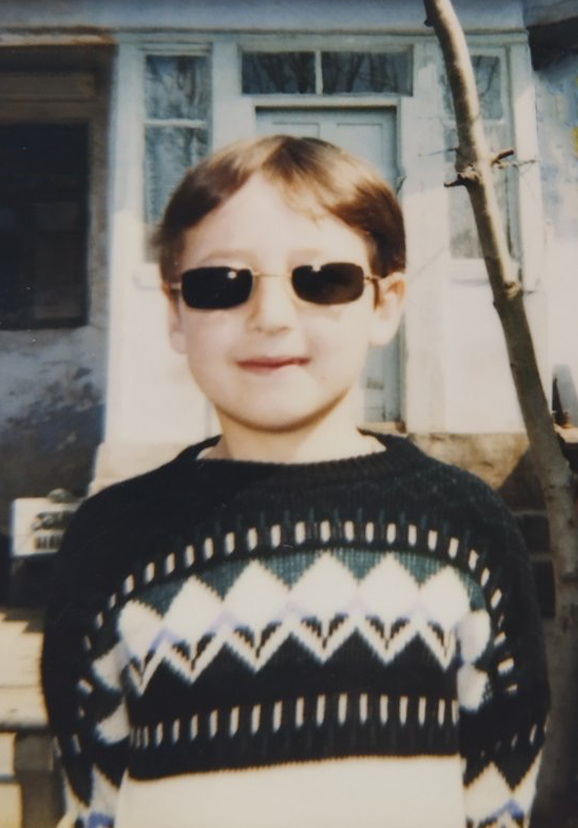

Hello everyone, my name is Kirill :) I am a front-end developer. The frontend has become for me something more than just drawing buttons) there is something to puzzle over and I like it, I like to look at complex tasks with ease and especially find solutions for their implementation, my pedantry does not let me get bored :) Everything is in my plans document and as they say “everything flows, everything changes”
